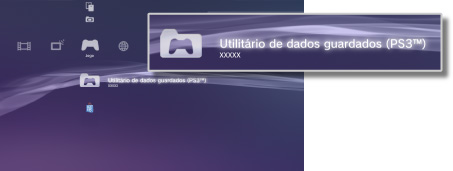

Jogo > Jogar software de formato PlayStation®3 > Utilizar dados guardados
Utilizar dados guardados
Os dados guardados relativos ao formato PlayStation®3 são guardados no armazenamento do sistema. Os dados apresentados em  (Utilitário de Dados Guardados (PS3™)).
(Utilitário de Dados Guardados (PS3™)).

Notas
- Os dados guardados são geridos separadamente por cada utilizador. Se existir mais do que um utilizador em
 (Utilizadores), os itens apresentados em (Utilitário de Dados Guardados (PS3™)) irão variar dependendo do Utilizador que tiver sessão iniciada.
(Utilizadores), os itens apresentados em (Utilitário de Dados Guardados (PS3™)) irão variar dependendo do Utilizador que tiver sessão iniciada. - Se seleccionar um ícone de dados guardados e premir o botão
 , pode ordenar os dados guardados por data de actualização ou agrupar os dados guardados por título no menu apresentado.
, pode ordenar os dados guardados por data de actualização ou agrupar os dados guardados por título no menu apresentado.
Armazenar dados guardados no servidor PSNSM
É possível armazenar dados guardados em software de formato PlayStation®3 num servidor PSNSM e transferi-los para outro sistema PlayStation®3 para continuar a jogar o seu jogo. Para utilizar esta função, é preciso ter uma conta Sony Entertainment Network e subscrever o serviço de subscrição PlayStation®Plus.
Armazenar automaticamente dados guardados
Pode armazenar automática e regularmente dados guardados novos e recentemente actualizados no armazenamento online.
Tem de definir esta função para cada jogo individual.
1. |
Em |
|---|---|
2. |
Seleccione [Carregamento automático dos dados guardados] e defina-o para [Ligado]. |
 (Jogo), seleccione o jogo com os dados guardados que pretende guardar e prima o botão
(Jogo), seleccione o jogo com os dados guardados que pretende guardar e prima o botão Notas
- Os dados guardados que são actualizados após a definição ser activada, serão automaticamente carregadas.
- Em
 (Definições), defina
(Definições), defina  (Definições de Sistema) > [Actualização Automática] para [Desligado] para desactivar a actualização automática dos dados guardados.
(Definições de Sistema) > [Actualização Automática] para [Desligado] para desactivar a actualização automática dos dados guardados.
Armazenar manualmente dados guardados
1. |
Seleccione |
|---|---|
2. |
Seleccione [Copiar]. |
3. |
Seleccione [Armazenamento online] como destino para guardar. |
Transferir dados guardados no armazenamento online para o sistema PS3™
1. |
Seleccione |
|---|---|
2. |
Seleccione os dados que pretende transferir e, em seguida, prima o botão |
3. |
Seleccione [Copiar]. |
Notas
- A capacidade de armazenamento máxima disponível é de 1 GB, e o número máximo de itens de dados guardados que é possível armazenar é 1000.
- Dados guardados que não sejam para software de formato PlayStation®3, PC Engine e NEOGEO e não podem ser armazenados.
- Os dados guardados protegidos por direitos de autor são processados do seguinte modo:
- - Carregamento para armazenamento online: Pode ser realizado a qualquer altura.
- - Transferir dados guardados do armazenamento online: Uma vez que dados guardados protegidos por direitos de autor sejam carregados ou transferidos do armazenamento online, deve aguardar, pelo menos, 24 horas antes de transferir de novo os mesmos dados.
- Não é possível utilizar o armazenamento online para alguns jogos. Para obter mais informações sobre jogos ou serviços que não suportem armazenamento online, seleccione aqui.